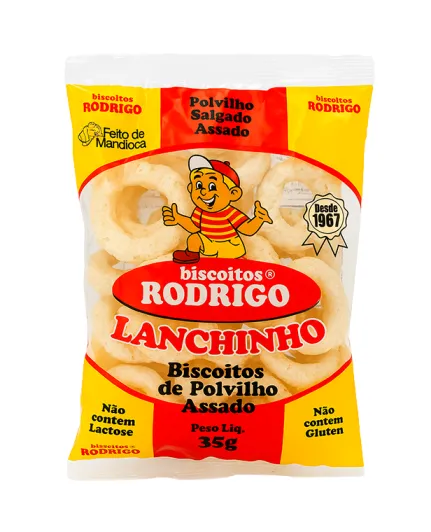
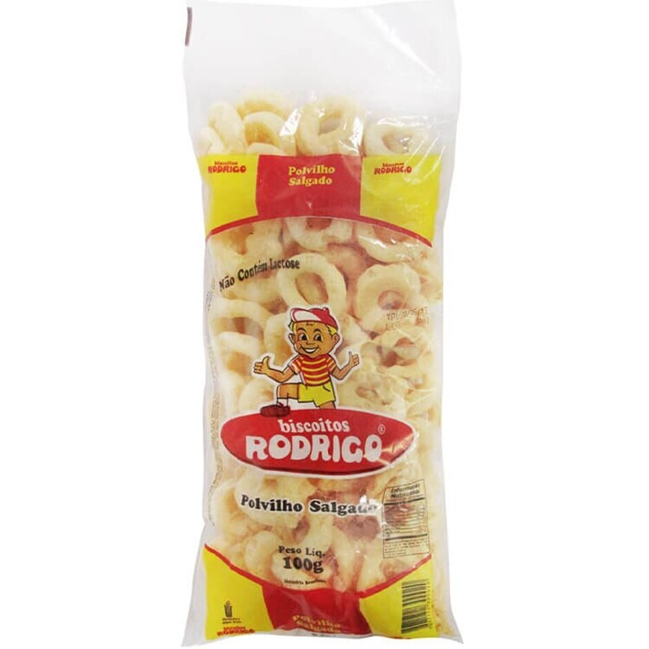

Nossos Produtos
Biscoito Tradicional 35g
Crocante, leve e com o sabor clássico que todo mundo ama. Perfeito para a hora do lanchinho.
Biscoito Tradicional 50g

O mesmo sabor irresistível, agora em uma porção maior para quem não quer parar no primeiro pacote!
Biscoito Tradicional 100g
Ideal para compartilhar com a família ou levar na mochila. Crocante e saboroso.
Biscoito Tradicional 150g

Para os verdadeiros apaixonados por biscoito! Mais quantidade, mesmo sabor e qualidade incomparáveis.